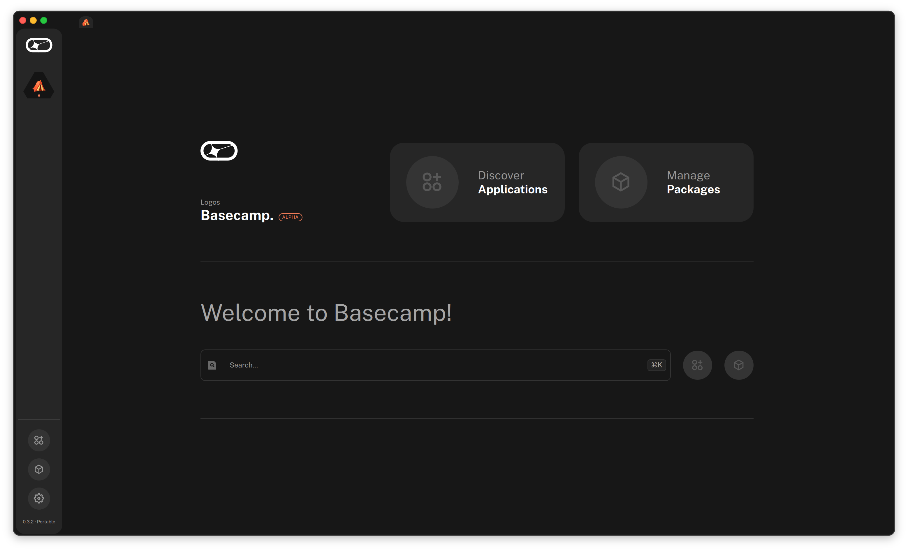
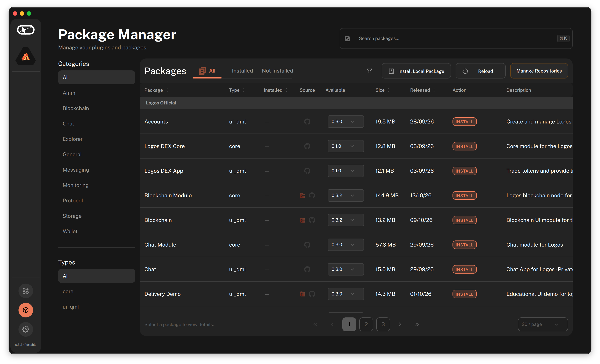
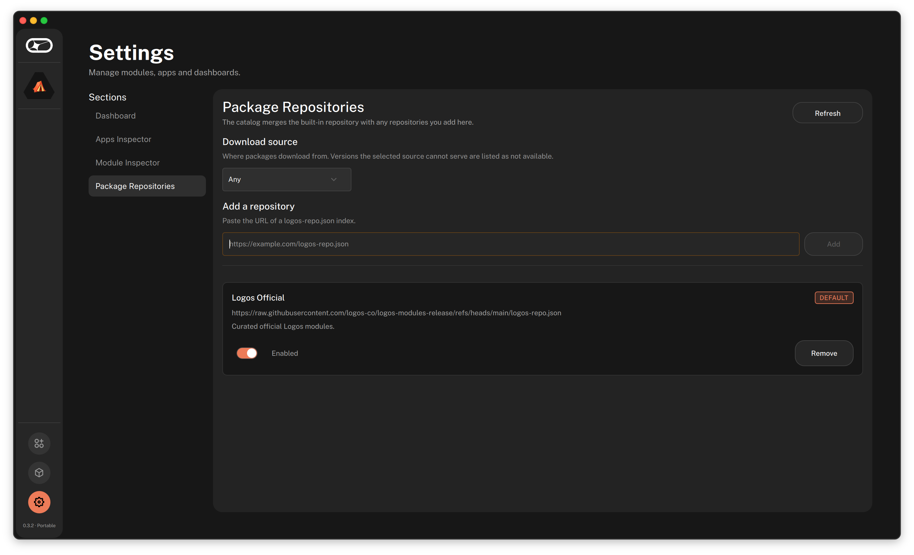
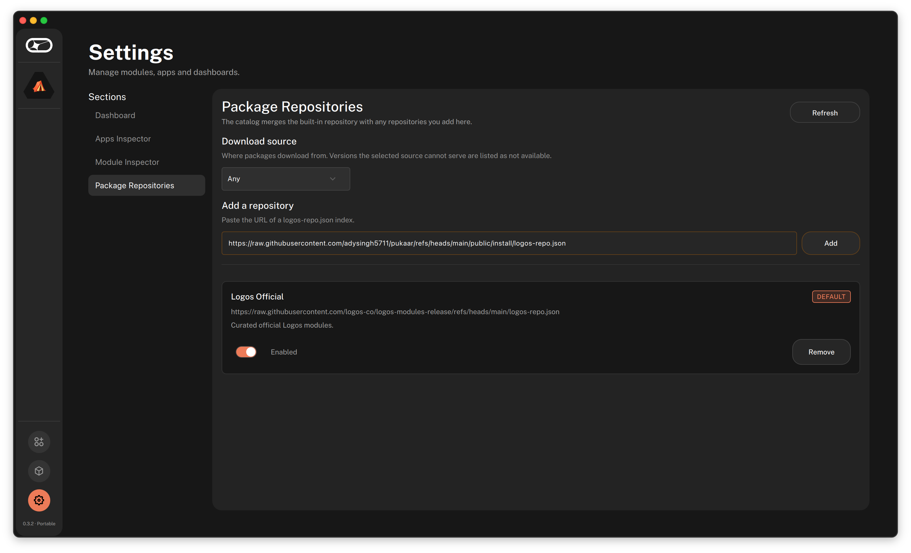
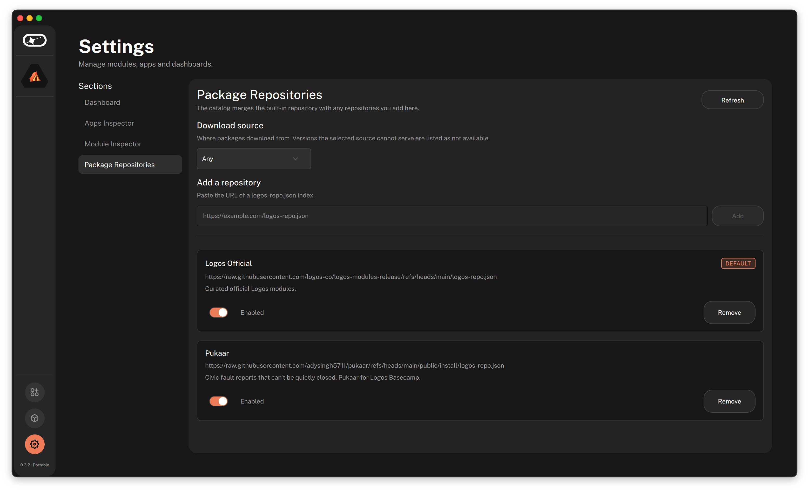
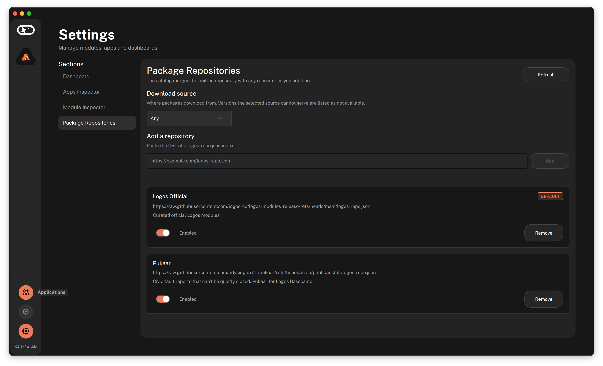
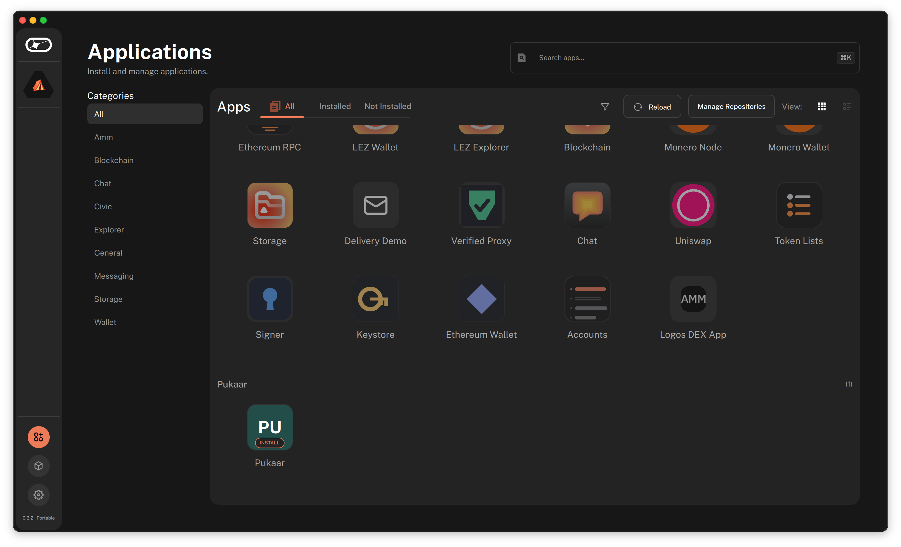
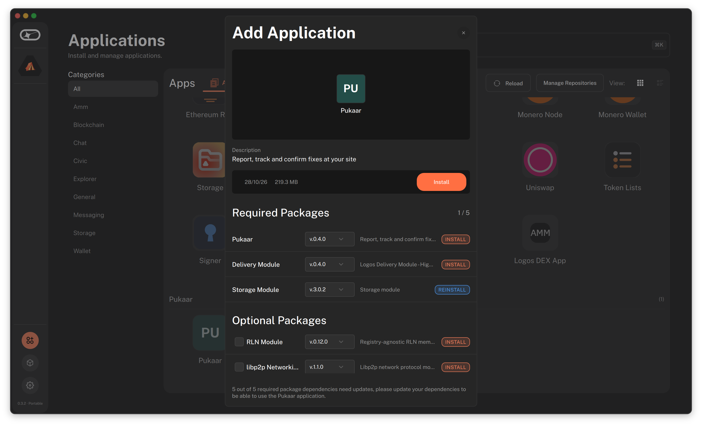

Pukaar is a community issue tracker for a shared site such as a camp, a building or a neighborhood. Members report faults like a broken light or a blocked drain, and a report is only closed when the person who filed it, or two other residents, confirm the fix. Private chat and meetings are in the same app.
darwin-arm64 only.Pick one way. Most people only need the first.
Basecamp keeps a list of sources it can install apps from. Add the Pukaar source once. Then Basecamp installs Pukaar and the modules it needs.
You will paste this link into Basecamp in step 5.
https://raw.githubusercontent.com/adysingh5711/pukaar/main/public/install/logos-repo.json
Start Basecamp. On the Welcome page, choose Manage Packages.

Open larger screenshotThe Package Manager opens. Choose Manage Repositories at the top right of the package list.

Open larger screenshotSettings opens on Package Repositories. Under Add a repository, click the empty box.

Open larger screenshotPaste the link from step 1, then choose Add.

Open larger screenshotPukaar now shows under Logos Official, switched on (Enabled).

Open larger screenshotIn the left bar, choose the Applications icon, the first of the three icons at the bottom.

Open larger screenshotPukaar has its own group at the bottom of the list, marked INSTALL. If it is not there yet, wait for the list to refresh, or choose Reload.

Open larger screenshotA window called Add Application lists the packages Pukaar needs. Choose Install and accept. Basecamp installs Pukaar and the modules it needs. Then do the restart step below.
Unsigned warning. If Basecamp warns that the package is not signed or not trusted, read the warning before you accept.

Open larger screenshotUse this if you cannot add a source. Download the files, then install each one from the Package Manager.
You will install them in this order. Skip any module that Basecamp already has.
delivery_module-0.4.0.lgx (sends your messages)storage_module-3.0.2.lgx (keeps files)chat_module-0.3.0.lgx (private chats)logos-pukaar_core-module-lib.lgx (Pukaar core)logos-pukaar_ui-module.lgx (the Pukaar screens)The first three come from the official Logos module catalog. The last two come from the Pukaar releases page, with a SHA256SUMS file you can use to check them.
Start Basecamp. On the Welcome page, choose Manage Packages.
In the Package Manager, choose Install Local Package, then pick the first file. Repeat for each file, in the order above. Then do the restart step below.
Closing the window is not enough.
Delivery keeps the network it was first started with, so a full restart is the only way it picks up the right one.
To join a site, paste its site id under Join a site. To start a new site, choose Create a site.